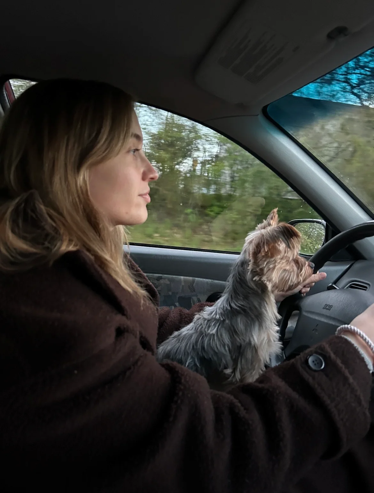

Luna's 24 billeder
Oversigt over billeder

Bedste venner
De små ting
Der var engang
Pas på os
På hovedet
For enden af regnbuen
Fodspor
Skræmmende
Smil på læben
Når lyset falder
Den nøgne sandhed
Så er det lige før
Passion
Et ulige antal
Midnatstimen
Ud af skyggerne
Et særligt sted
Ensom
Ekstase
Uendelig kærlighed
Fredfyldt
Hvad gik galt
Åh nej...
Sidst med ikke mindst